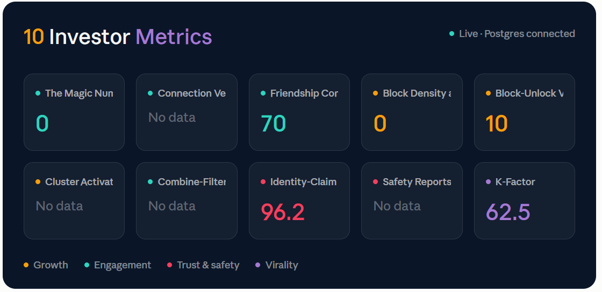
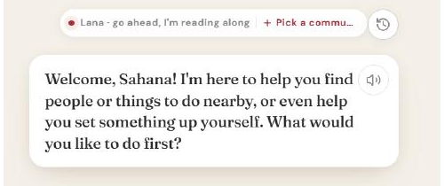
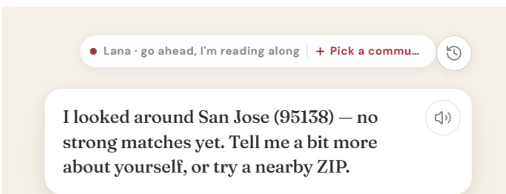
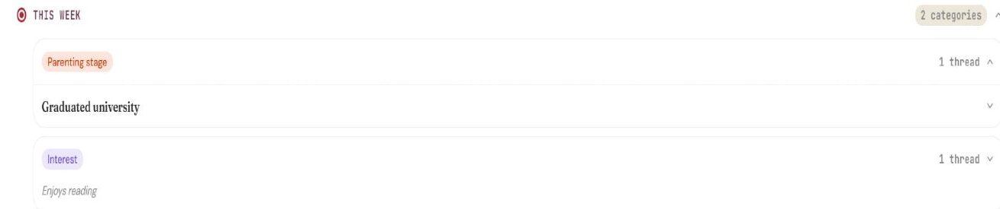

Deciding what to build — and how we'll know it worked.
I'm a cognitive science graduate who turns ambiguous problems into prioritized decisions, shipped products, and the metrics that hold them accountable. Research is where I start; a defensible roadmap is where I end up.
Trained to notice what a system isn't saying.
I study cognitive science with a specialization in AI & Human-Computer Interaction at UC Santa Cruz, minoring in Computer Science. That combination is why I gravitate toward product: I have the research methods to explain why a user hesitates, the data skills to size how often it happens, and the design fluency to sit with engineering and design while we fix it.
Across internships and lab work, I've benchmarked products against their competitive landscape, prioritized the metrics a company takes to its investors, built the dashboards and AI agents that monitor those metrics, and run the usability testing that sends findings back into the roadmap. What I care about most is the connective tissue — making sure research actually changes what gets built, and that what gets built has a number attached to it.
Research in, decisions out.
Both case studies below follow the same loop — it's how I think about product work generally.
Ground it in evidence
Competitive benchmarking, user interviews, journey mapping — whatever it takes to replace internal opinion with something external and checkable.
Prioritize ruthlessly
Every project produces more candidate features and metrics than anyone can act on. The job is choosing the vital few and being able to defend why the rest were cut.
Instrument the bet
A decision without a metric is a guess. I define the KPIs and monitoring that tell us whether the thing we shipped actually did what we said it would.
Strategy-driven, tool-fluent.
Product & Strategy
Research & Validation
Data & Tools
Where the work has taken me.
Phygtl, Inc. (TagAlng)
Apr 2026 — Current- Benchmarked the product against 8 peer companies (Nextdoor, Bumble BFF, Peanut, Mush, Meetup, Airbnb Experiences) to evaluate metric coverage, positioning, and gaps against the competitive landscape.
- Narrowed a broad candidate set down to the 10 investor metrics the company reports, organized into Growth, Engagement, Trust & Safety, and Virality.
- Designed and built the live investor metrics dashboard in Looker Studio, connected to a PostgreSQL database via Supabase.
- Configured 9 custom AI agents in Amplitude to monitor those metrics autonomously, and defined the data-governance rules for how they triage severity, format findings, and dedupe overlapping alerts into Jira.
- Ran ongoing product testing on the company's conversational AI concierge, translating friction points into prioritized iteration recommendations.
Tech4Good @ UCSC
Mar 2026 — Jun 2026- Completed a studio-style apprenticeship focused on hands-on skill building and project experience.
- Learned visual design principles, brand logo design, usability heuristics, rapid iteration, information architecture, user research, AI-assisted design, color psychology, user flows and journeys, and wireframing and prototyping in Figma.
- Built real-world projects including brand style guides, WCAG accessibility checks, logos, user flows, and paper-to-mid-fi wireframes.
UCSC Computer Vision Lab
Mar 2025 — Jun 2025- Designed and ran 15 usability trials across 8 system configurations to optimize a web-based head-pointing interface for users with upper-limb impairments.
- Measured effectiveness and accessibility by analyzing 120 RMSE performance data points in SPSS and Excel.
- Applied cognitive load and human factors principles to refine calibration workflows, producing 13+ visualizations that guided iterative UI improvements.
Ohlone College
Nov 2023 — May 2024- Scoped and managed end-to-end qualitative and quantitative research to diagnose completion barriers in a Tesla-funded technical certification program.
- Recruited, screened, and surveyed 60+ participants across 3 mixed-methods research cycles.
- Pitched a strategic hybrid delivery model that drove a 50% increase in student enrollment.
Two products, end to end.
One shipped inside a startup, one built from scratch as a product concept. Both start with research and end with a number we could hold the decision to.
TagAlng
From market research to AI-governed product metrics — benchmarking, prioritizing, dashboarding, and building the agents that monitor it all.
Read the case study → Product Concept · UCSCSlug Housing
Turning a campus housing crisis into a validated product bet — research, prioritization, usability testing, and a KPI framework.
Read the case study →From market research to AI-governed product metrics
TagAlng is a hyperlocal, identity-based connection app — the people within a five-minute walk who share what defines you. It's pre-revenue and pre-Series A, and building the metrics story it will bring to investors. I owned that story end to end: benchmarking the market, prioritizing what to track, designing the dashboard, and configuring the AI agents that monitor it.

One question, three gaps to close
"Are we building the right thing, and would an investor believe it?" Asking that exposed three separate gaps — and each became a phase of the project.
01 — No external benchmark
We had a set of potential investor metrics but no sense of whether they were the right ones, or how they'd read next to comparable companies.
02 — Too many possible metrics
Dozens of candidate metrics existed across engagement, growth, trust & safety, and virality. Investors needed the vital few, not everything we could measure.
03 — Monitoring doesn't scale by hand
We were tracking more signals than one person could check daily. Something autonomous had to monitor them for us.
Phase 1 — Benchmarking against 8 market comparables
Scope: products that measure real-world connection between people who share an identity or interest within a small geography — the same job TagAlng does. Public companies were sourced from SEC filings and investor communications; private companies from funding-round coverage and founder interviews, documented per-source so every claim is traceable.
Phase 2 — Prioritizing the 10 investor metrics
Every surviving metric was sorted into one of four categories — the same categorization now used across the dashboard, the agents, and the benchmark report, so nothing needs translating between artifacts.
Growth
- Block Density at LIVE
- Block-Unlock Velocity
- Cluster Activation Curve
Engagement
- The Magic Number
- Connection Velocity
- Friendship Compound
- Combine-Filter Lift
Trust & Safety
- Identity-Claim Accuracy
- Safety Reports
Virality
- K-Factor
Turning those metrics into a live dashboard
Built in Looker Studio, connected live to a PostgreSQL database via Supabase — the same source of truth engineering and the AI agents both read from. Every card is color-coded to its category, so an investor or teammate reads the dashboard's structure at a glance without a legend.
Phase 3 — From dashboards someone checks to agents that act
The nine agents
One per metric family, spanning both investor and market metrics, each on its own cadence. Highlighted rows are regular summaries that inform rather than interrupt; the rest create tickets automatically when an existing threshold is crossed.
| # | Agent | Cadence | Destination | Action |
|---|---|---|---|---|
| 1 | Event Funnel Health | Daily | Frontend & Backend | Create a ticket for serious drops |
| 2 | UX Frustration Monitor | Weekly | Frontend / Design | Send a summary, no ticket needed |
| 3 | Signal & Engagement Quality | Weekly | Product / Lana team | Create a ticket for real swings |
| 4 | Market Metrics Weekly Digest | Weekly | Whole team | Send a summary, no ticket needed |
| 5 | Active Users Pulse | Daily | Backend & Product | Create a ticket for serious drops |
| 6 | Session Quality Monitor | Weekly | Frontend / Engineering | Create a ticket when threshold is hit |
| 7 | Retention Health | Weekly | Product / leadership | Create a ticket for serious drops |
| 8 | Business Funnel Conversion | Daily | Frontend & Backend | Create a ticket, checking #1's tickets first |
| 9 | Business Events Daily Digest | Daily | Backend / Product | Create a ticket when threshold is hit |
Designing how the agents govern themselves
Self-triage by severity
Each finding is auto-labeled using thresholds already built into the agent: urgent (well past threshold), needs attention soon (just crossed it), or worth watching (small, recurring, no single week alarming).
One consistent format
Every ticket states what changed, which metric or event it affects, how urgent it is, and a starting point for investigating — identical shape no matter which of the 9 agents created it.
Dedupe across overlapping agents
Event Funnel Health and Business Funnel Conversion watch nearly the same journey. The second checks for an existing ticket first and adds a note instead of duplicating — turning overlap into a stronger signal rather than noise.
Human-in-the-loop, not human-in-the-way
Someone reviews what the agents created every week or two — not to rebuild anything, just to catch a bad call or a noisy agent and adjust its instructions. A check-in, not a rebuild.
Scope note: I designed and configured how the agents work. I wasn't responsible for monitoring the ticketing system or the backend setup it required.
Phase 4 — Testing the product the agents watch over
TagAlng's AI concierge is the surface those agents monitor, so I test it periodically — focusing on Day-0 users with no established block, since that's where trust has to be built from zero. In my most recent pass I role-played a first-time user: a new grad who enjoys reading, looking for people like her. I walked the flow end to end and logged every friction point verbatim.

Context gets dropped
The agent re-asks what the user is looking for right after email verification, even though it's already in her profile.
RecommendationAcknowledge it instead — "I remember you were searching for X. Want to change it?"

Dead-end matching
When no one nearby matches, the agent just says so — repeatedly, with no path forward for the user.
RecommendationAfter a few failed tries, proactively offer to open a new block for that ZIP code.

Persona locked to a single template
The clearest bug: "Graduated university" (education) was filed under "Parenting stage," and the profile assumed motherhood without it ever being stated.
RecommendationGeneralize the underlying template beyond the original persona it was built around.
What this proved
- The 10 investor metrics are no longer internal opinion — they're benchmarked against 8 real comparables, with named gaps and named strengths.
- One live source of truth for investors, color-coded by the same categories used in the research and the agents, so no artifact needs translating into another.
- 9 agents monitor what one analyst can't watch alone, self-triage by severity, and only interrupt engineering when a threshold is actually crossed.
- Manual product testing didn't just log bugs — it validated what the monitoring agents should flag automatically going forward.
Where it goes next
Adopt Growth-plan capabilities
Auto-updating behavioral cohorts for live segments, custom formulas to build combined metrics natively, heatmaps to check whether a flagged drop-off is really a discoverability problem, and threshold-triggered alerts that fire instantly rather than on the next agent run.
Extend the governance loop
Give all 9 agents permission to act rather than suggest, re-test the concierge after the persona and dead-end fixes ship, consider a supply-side organizer metric as an 11th investor metric, and make the biweekly human check-in a permanent cadence rather than a temporary step.
Turning a campus housing crisis into a validated product bet
When UCSC students lose the housing lottery, they're left searching fragmented rental sites with hidden costs, unverified listings, and no way to gauge roommate fit — often on a tight, urgent timeline. Slug Housing replaces that scramble with a preference-first search built around trust and speed.

The product bet
From research signal to prioritized requirements
Four research signals, ranked by urgency and frequency across interviews, became the requirements for our first iteration — not a wishlist.
Affordability & clarity
Students on tight financial-aid budgets can't afford surprises.
PrioritizedUpfront rent, deposit, and utility breakdowns on every listing.
Verified listings
Urgent timelines leave students exposed to rental scams.
PrioritizedClear photos and landlord verification before a listing goes live.
Direct contact
Email chains get lost; inquiries go unanswered for days.
PrioritizedBuilt-in messaging replaces external, easily-dropped threads.
Fast filtering
Students need to rule listings in or out in seconds, not minutes.
PrioritizedOne-tap filters for price, distance from UCSC, and open roommate slots.
Designing around two core user segments
John Cruz
Secure affordable housing near UCSC transit lines quickly, before the term starts.
First time living independently, tight financial-aid budget, worried about homelessness after missing the housing lottery.
Sarah Lin
Find compatible housemates and a flexible 9-month sublease near downtown Santa Cruz.
Incompatible roommate habits in the past; struggles evaluating utility splits and lease terms remotely.
From lottery rejection to signed lease
Loses the lottery, downloads the app
Worried / DesperateCompletes the survey, browses the feed
Excited → HopelessReviews costs, messages a landlord
HopefulSecures a lease or a shortlist
RelievedStructuring the product around three jobs to be done
Entry & Onboarding
Landing, login, sign-up, guest mode. A preference survey captures budget, distance to UCSC, and roommate count, feeding directly into profile creation.
Search & Discovery
Search bar plus filter/sort controls over a card feed leading with price, distance from UCSC, and a thumbnail — the three facts students scan for first.
Listing & Contact
Property detail combines a photo carousel, address, price, and utility overview with two actions: save the listing or message the landlord directly.
Validating the bet before scaling it
Four moderated think-aloud sessions — two remote, two in-person — evaluating onboarding logic, navigation, visual hierarchy, and overall intuitiveness.
Shipping the fix: bottom navigation
Testers lost their sense of place with no persistent, labeled navigation. The redesign added a fixed icon bar with a clear active-state indicator.


Shipping the fix: landing page
Two testers mistook the homepage for a login portal. The redesign added imagery and clearer entry actions so the product reads as a housing app on first glance.

KPI framework: measuring adoption & drop-off
01 — Onboarding & survey
- Survey completion rate (started vs. finished)
- Time-to-complete survey
- Drop-off point within the survey
02 — Discovery & filtering
- Listings viewed before first save or contact
- Feed-to-detail page click-through rate
03 — Listing & contact
- Detail-page-to-contact rate
- Message send completion rate
- Time from listing view to message sent
- Landlord response rate & time
04 — Retention
- Returning-user rate & days-to-return
- Saved-listing engagement rate
What this proved, and where it goes next
- Bypasses generic real-estate clutter to address the specific realities of a UCSC housing crisis: lottery cutoffs, financial-aid budgets, school-year lease terms.
- Replaces manual filtering with a short onboarding survey that matches listings to budget, proximity, and housemate fit before a student starts scrolling.
- Next: A/B test survey-first onboarding against a browse-first flow to confirm it reduces the Stage 2 drop-off.
- Next: pilot landlord verification with real Santa Cruz property managers, and instrument the build to capture the funnel metrics defined above.
A few other things I care about.
Environmental Activism
Co-founded a sustainable menstruation initiative, working to make eco-friendly menstrual products more accessible and reduce plastic waste.
Teaching & Tutoring
Worked as a peer notetaker and an English tutor for disadvantaged students — I like making information more accessible, whether that's on a screen or in a classroom.
Fiction, On Page & Screen
A dedicated fan of the world of fiction, whether that's movies or books — especially anything in the action and fantasy genres.